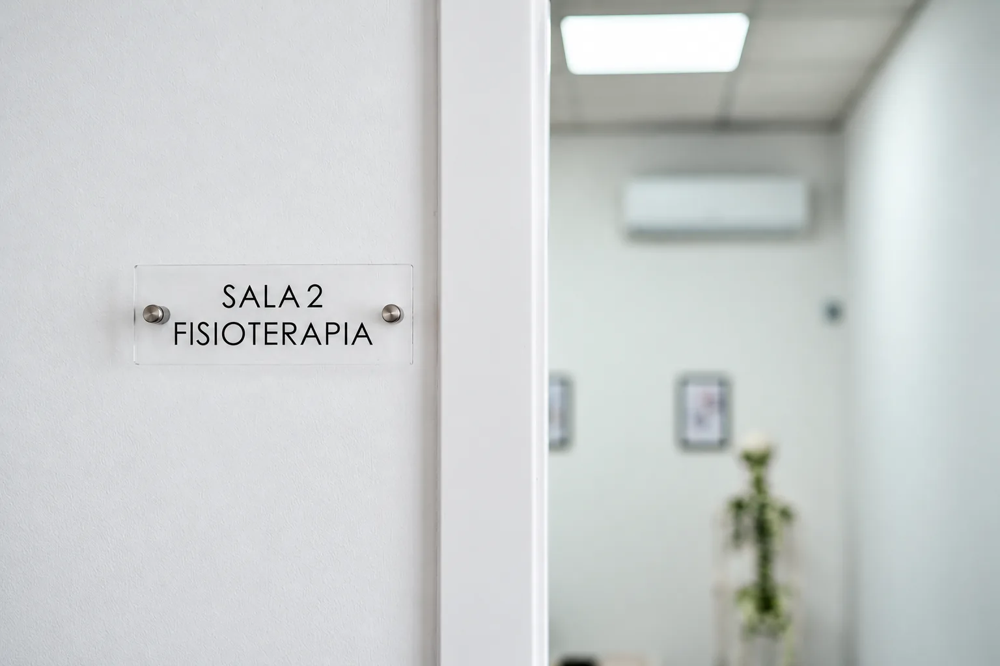
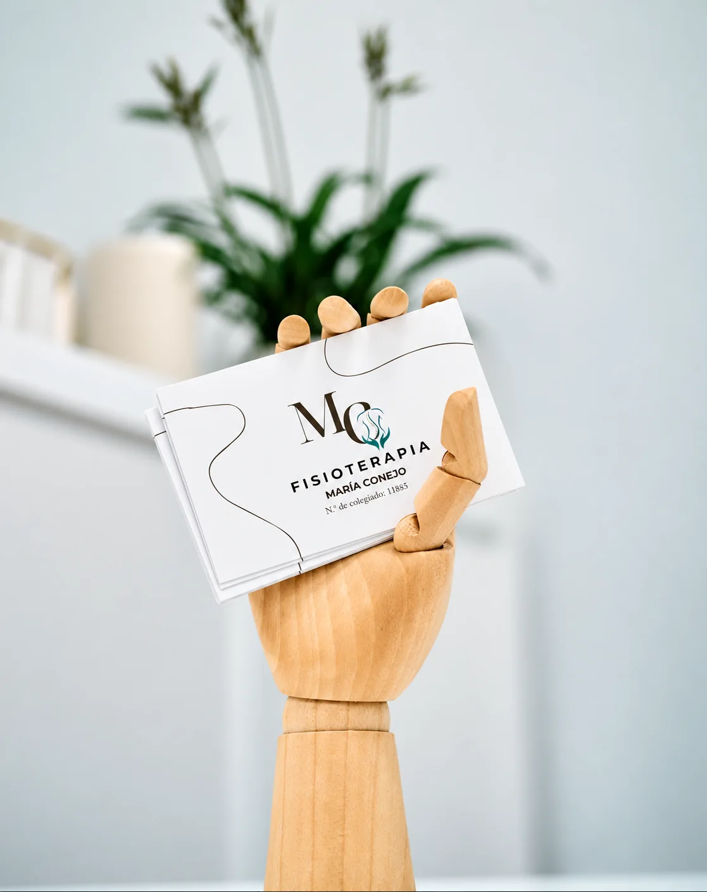

Cita por WhatsApp
La forma más rápida. Te respondemos en horario de clínica.
Escribir ahora
Horario, cómo pedir cita, qué esperar de la primera visita, bonos, normativa y respuestas a las dudas más habituales.
Atención con cita previa · Festivos: consultar.
La forma más rápida. Te respondemos en horario de clínica.
Escribir ahoraLlámanos al 656 64 33 30. Si estamos en sesión, te devolvemos la llamada.
LlamarFisioterapia y podología en casa para movilidad reducida. Consulta cobertura.
ConsultarTarjeta de crédito o débito y pago con el móvil (NFC).
Sin prisas: el primer día está pensado para conocerte y entender qué te ocurre.
Por WhatsApp o por teléfono, cuéntanos brevemente qué necesitas.
Te indicamos el servicio adecuado y te proponemos día y hora.
Valoración completa: historia, exploración y, si procede, ecografía.
Te explicamos qué ocurre y empezamos a trabajar juntos.
Ropa cómoda, informes o pruebas de imagen si los tienes y la lista de medicación que tomas.
Unos minutos antes, para empezar a la hora y aprovechar toda la sesión.
Queremos que entiendas tu proceso. Ninguna duda es pequeña.

Los bonos de sesiones te ayudan a mantener la continuidad del tratamiento. Pregúntanos sin compromiso por las modalidades disponibles.
Consultar bonos
Una sesión de fisioterapia, FisioPilates, nutrición o podología: el regalo perfecto para alguien que se cuida. Validez de 1 año.
Pedir tarjeta regaloAplicamos estas normas para garantizar que otra persona que lo necesite pueda beneficiarse de su cita.
¡gracias siempre!
Se ruega acudir a la cita con puntualidad. En caso de retraso, la sesión finalizará a la hora prevista para no perjudicar al siguiente paciente.
Si no puedes asistir a tu cita programada, es obligatorio avisar con al menos 12 horas de antelación. De no hacerlo o no presentarse, se aplicará el recargo íntegro del importe de la sesión.
Las faltas de asistencia reiteradas o el incumplimiento constante de las normas de aviso previo podrán suponer la suspensión del servicio.
Tanto los bonos de sesiones como las tarjetas regalo tienen un plazo de validez de 1 año a partir de la fecha de su adquisición. Transcurrido este periodo sin haber sido utilizados, perderán su validez.
Todo lo que necesitas saber antes de venir.
¿Tienes otra pregunta?
EscríbenosNo. Puedes reservar directamente por WhatsApp o por teléfono. Si tienes informes, pruebas de imagen o indicaciones de tu médico, tráelos a la primera visita: nos ayudan a entender mejor tu caso.
Empieza con una valoración completa: conversamos sobre tu historia, tus hábitos y lo que te ocurre, exploramos cómo te mueves y, cuando aporta información, utilizamos la ecografía. Con todo ello te explicamos qué ocurre y diseñamos contigo un plan de tratamiento.
Ropa cómoda que permita moverte y acceder con facilidad a la zona a tratar. Para FisioPilates, ropa deportiva y calcetines; para el estudio de la pisada, el calzado que usas habitualmente.
De lunes a jueves de 11:00 a 14:00 y de 15:00 a 21:00, y los viernes de 11:00 a 14:00 y de 15:00 a 20:00. Sábados y domingos, cerrado. Se atiende con cita previa.
Sí. Hay bonos de sesiones de fisioterapia y tarjetas regalo, con una validez de 1 año desde su adquisición. Pregúntanos sin compromiso por las modalidades disponibles.
Avísanos con al menos 12 horas de antelación. Así otra persona que lo necesite podrá aprovechar ese hueco. Las ausencias sin aviso conllevan el cargo íntegro de la sesión.
Sí, ofrecemos fisioterapia y podología a domicilio, pensadas especialmente para personas con movilidad reducida. Escríbenos con tu localidad y te confirmamos disponibilidad.
Puedes pagar con tarjeta de crédito o débito y también con el móvil mediante pago sin contacto (NFC).
Responde tres preguntas y te preparamos el mensaje para enviarlo por WhatsApp. No guardamos ningún dato: tú decides si lo envías.
Te acompañamos en el proceso
Escríbenos y te ayudamos a encontrar la atención que necesitas. Respondemos lo antes posible.